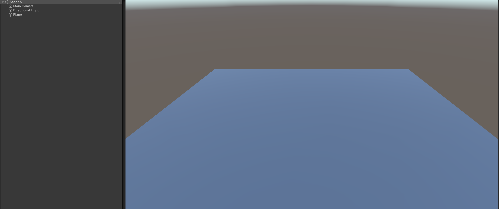
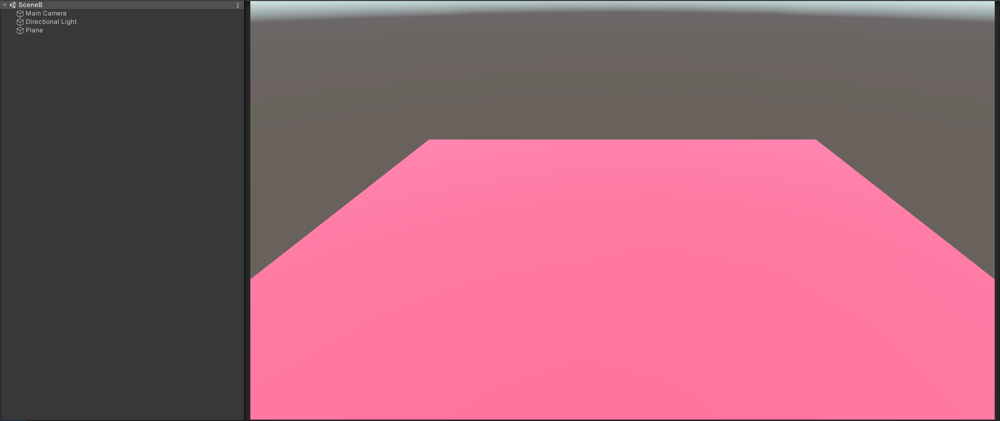
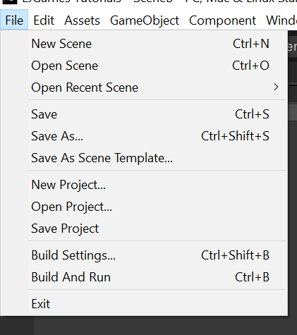

1. Set up your scenes
First, set up two distinct scenes so it is clear when you have switched.For testing purposes, I have set up Scene A and Scene B:

2. Add scenes to build settings
Choose 'File > Build Settings' to open the build settings, then drag each scene from the 'Project' panel into the box.

3. Add code
To the top of the script of your choice (or a new script), add the following:using UnityEngine.SceneManagement;
Then add, to the place where you want to change scene:
SceneManager.LoadScene([Scene Name]);
In my case, it would be:
SceneManager.LoadScene("SceneB");
Changing to the next level
If you are making a platformer game, or puzzle game, and want to progress to the next level, then you can use buildIndexes.The build index is the number next to the scene in the Build Settings, on the far right.
To move to the next scene in the build settings, you can write:
Scene currentScene = SceneManager.GetActiveScene();
SceneManager.LoadScene(currentScene.buildIndex + 1);
SceneManager.LoadScene(currentScene.buildIndex + 1);
Conclusion
Changing scenes is essential to most complex games.To change to a specific scene, use SceneManager.LoadScene("Example");
To change to the next scene, use SceneManager.LoadScene(SceneManager.GetActiveScene().buildIndex);
Post-note
Did this tutorial make sense? It would be useful to know, which is why you can leave feedback for my tutorials by clicking here.Thanks for reading!